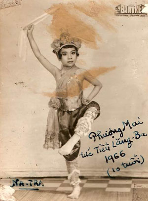

NỮ NGHỆ SĨ PHƯỢNG MAI:
Trong lịch sử Sân Khấu Việt Nam, ngành nghệ thuật Hát Bội và Cải Lương có một thời gian dài hoạt động, có nhiều nghệ nhân tài danh, nhiều soạn giả xuất sắc, nhiều vở tuồng đã đi vào lòng khán giả nên các nhà nghiên cứu văn học nghệ thuật và báo chí kịch trường có viết bài phê bình, giới thiệu, tổng kết, nâng lên thành lý luận nghệ thuật Hát Bội và nghệ thuật Cải Lương. Có một loại hình nghệ thuật biểu diễn sân khấu, con đẻ trực tiếp của nghệ thuật Hát Bội và Cải Lương phối hợp tạo nên, từ hơn bốn mươi năm nay được khán, thính giả say mê, ủng hộ, nhưng không được công nhận là một loại hình nghệ thuật đứng đắn: Đó là nghệ thuật Hát Hồ Quảng.
Hát Hồ Quảng còn được gọi là Cải Lương Hồ Quảng được khai sanh trong trường hợp nào, trong hoàn cảnh nào và hình thức ca, diễn của Hồ Quảng ra sao mà bị một số công luận chống đối? (Tôi chỉ nói có sự chống dối của một số nghệ sĩ hay các nhà nghiên cứu thuần túy về nghệ thuật hát bội truyền thống nhưng về phía dân chúng bình dân và khán giả thì sự thích thú có lẽ không kém so với nghệ thuật hát cải lương).
Còn nhớ năm 1948, tôi được mời cộng tác với anh Thành Tôn, anh Hữu Thoại và chú Sáu Vững, chép ra các vở tuồng hát bội do các anh ấy hát, để có kịch bản văn học nạp cho Đài Phát Thanh Sàigòn kiểm duyệt, dùng cho các buổi diễn hát bội thu thanh của Ban hát bội Vân Hạc, chú Sáu Vững, trưởng Ban Vân Hạc có nói với anh Thành Tôn:“Mầy hát sao mà tao thấy Tiều Quảng quá. E khán giả không thích “.
Anh Thành Tôn là người luôn luôn muốn canh tân nghệ thuật hát bội vì anh thấy nếu giữ nghệ thuật hát bội thuần túy như xưa, sẽ mất hết khán giả. Vì vậy anh đi coi hát Tiều, hát Quảng rồi học lóm những cái hay của hát Tiều và hát Quảng, đem áp dụng cho hát bội pha cải lương do anh và một số nghê sĩ hát bội ở Tấn Thành Ban đề xướng.
Anh nói
“Tôi học các gánh hát Tiều, hát Quảng là học cái nghê thuật tạo hình, diễn xuất, vũ đạo. Về y phục, cảnh trí, cách ca hát canh tân là để cho khán giả dễ hiểu. Người ta coi hát mà không hiểu mình hát gì thì họ sẽ không coi nữa.”
Hồi xưa, sân khấu hát bội của ta và sân khấu hát Tiều có nhiều điểm giống nhau: Trang trí sân khấu ước lệ, có màn trướng thêu rồng phụng, ngăn cách nơi biểu diễn với chỗ sắm tuồng, bàn ghế đơn sơ, y phục không loè loẹt, mang râu bít miệng. Phong cách biểu diễn tượng trưngười: đi ngựa bằng cách múa roi, lên xe giữa hai tấm vải vẽ hình bánh xe, nhảy lên ghế là thăng thiên, chui xuống bàn là độn thổ…
Trong những thập niên 1930, 1940, 1950, 1960 nhiều đoàn hát Quảng từ Quảng Châu, Thượng Hải, Hương Cản sang biểu diễn ở Chợ Lớn và các tỉnh có nhiều Hoa kiều, sân khấu màu sắc lộng lẫy, trang phục sang trọng rực rỡ, tranh cảnh thay đổi từng lớp, từng hồi, coi rất bắt mắt. Dàn nhạc có trống kèn, chập chỏa, đồng lố, hầu củn nên rất xôm, hấp dẫn. Khán giả Hoa, Việt đều thích coi hát Quảng vì trang phục đẹp, lối hát lôi cuốn, điệu múa rất huê dạng.
Các đoàn Bầu Thắng, Tấn Thành ban Bầu Cung (Sàigòn), Bầu Luông (Vĩnh Long), Bầu Bòn (Cần Thơ), Bầu Hiền (Sa Đéc) là những đoàn đi tiên phong trong việc canh tân hoá hát bội, đổi bảng hiệu thành đoàn Hát Bội Pha Cải Lương.
Họ vào Chợ Lớn đặt may y phục theo lối hát Quảng, có thêu kim kim tuyến, mắt gà, mua sắm mũ mão Thượng Hải, Hồng Kông.
Trang trí phong cảnh như đền vua, vườn hoa thật là tráng lệ, giống như các đoàn hát Thượng Hải.
Hàm râu bít miệng được thay thế bằng những hàm râu liên tu, 5 chòm, 3 chòm để khán giả thấy miệng diễn viên khi ca, hát.
Dàn nhạc cũng được mô phỏng theo nhạc Quảng.
Về sân khấu có một nguyên lý mà người theo nghề hát phải tuân thủ theo: Khi chất liệu dùng trên sân khấu thay đổi thì nghệ thuật sân khấu ca, ngâm, diễn xuất, trang trí cũng bị ảnh hưởng mà phải thay đổi theo cho phù hợp.
Ngày xưa, may áo giáp hát bội bằng vải bố, vải viền màu bằng vải ta, vải tám, đóng ngọc lộ bằng thiếc, bộ áo giáp cồng kềnh, thô cứng nên kép võ cũng phải dùng điệu múa thô cứng, động tác mạnh bạo.
Khi các đoàn hát bội của ta mua trang phục của các đoàn hát Quảng ở Hồng Kông, Thượng Hải qua Sàigòn hát, các bộ giáp may bằng hàng tơ lụa, viền bằng chỉ kim tuyến, thêu mắt gà, vừa rực rỡ sáng chói, vừa có màu sắc hài hòa, diễn viên ta mặc áo giáp hay mảng bào tơ lụa, vải mềm tha thướt tự nhiên giáng đi điệu múa của diễn viên cũng phải tha thướt dịu mềm.
Về nhạc cũng vậy, khi có trống, bạt, chập chỏa, đồng lố và kèn lá của dàn nhạc Quảng vô sân khấu thì vũ đạo hát bội phải theo trình thức của hát Quảng thì mới phù hợp. Hát Bội tuy mang danh nghĩa là pha cải lương nhưng trong các thập niên 1940, 1950, vì hát phần lớn là tuồng theo tích truyện Tàu, nên dù muốn hay không cũng bị lai theo hát Tiều và hát Quảng.
Một số diễn viên lớn tuổi, cao tay nghề không chịu theo lối hát “Lai Căng” này, cho là hát Tiều Quảng, làm mất giá trị nghề nghiệp truyền thống. Nhóm này có các nghệ nhân tên tuổi như Tám Tri, Mười Hiếu, Biện Dực, Tám Văn, Mười Sự, Chín Luông, Chín Tài, Minh Biện, Tám Hiển, Năm Còn…
Danh từ hát Tiều, hát Quảng là để chỉ lối hát lai căng do xuất xứ này. Thành ngữ trong giới cải lương, hát bội: Nói Tiều, nói Quảng là nói bậy nói bạ.
Những nghệ nhân hát bội giỏi múa Quảng, áp dụng một số vũ đạo Quảng vào tuồng ta và làm thành căn bản cho vũ đạo hát Hồ Quảng là các anh Thành Tôn, Hai Thắng, Mười Vàng, Minh Tơ, Khánh Hồng, Công Chấn, Công Minh…
Năm 1960, một số phim ảnh Hồng Kông, Đài Loan du nhập, loại sân khấu kinh kịch của Tàu được đưa vào điện ảnh với những vở tuồng trữ tình do các tài tử trứ danh Lý Lệ Hoa, Lâm Đại, Nghiêm Tuấn, La Duy, Lăng Ba, Lạc Đế, đã chinh phục khán giả Việt, Hoa bằng những bài hát du dương tươi mát, có nhạc khí cổ truyền hòa điệu, hợp với cảm quan của người Việt Nam và người Á Đông nói chung.
Lập tức các nghệ sĩ hát cải lương pha Quảng đua nhau học hát, rước thầy Tàu dạy ca các bản nhạc Đài Loan.
Người có công lớn nhất trong việc đưa các bản nhạc Đài Loan vô làm thành điệu ca Hồ Quảng, theo tôi biết đó là nhạc sĩ Đức Phú.
Đức Phú là em ruột của Minh Tơ. Anh giỏi về tuồng cổ, hát bội pha Quảng và giỏi về đàn Piano, guitare tân nhạc. Khi tôi quen biết anh là lúc anh làm nhạc trưởng vũ trường Kim Sơn, gần đình Cầu Quan. Thời gian này anh chung sống vợ chồng với danh ca Hồng Loan, ca sĩ các vũ trường Kim Sơn, Paramount, Arc en Ciel.
Đức Phú ghi âm các bản nhạc Đài Loan trong các film Lương Sơn Bá Chúc Anh Đài, Thanh Xà Bạch Xà, Hoa Mộc Lan Tùng Chinh rồi viết lời Việt, dùng trong tuồng Lương Sơn Bá Chúc Anh Đài do anh sáng tác và dàn dựng trên sân khấu Minh Tơ.
Có hai nhạc công Tàu: Há Thầu và Chú Long, viết nhạc Hồ Quảng (tức là nhạc trong phim Đài Loan) cho đoàn cải lương Hồ Quảng Huỳnh Long-Bạch Mai.
Há Thầu đặt tên các bản nhạc Hồ Quảng đó là Bài Ly Hận, Xáng Xáng Lu, Chiêu Quân Hội, Phụng Hoàng San, Hoàng Mai 5, Hoàng Mai 15…(không rõ là do ngẫu hứng hay Há Thầu dịch từ bài Đài Loan ra các tựa bài ca Hồ Quảng kể trên). Há Thầu tên thật là gì không ai biết, chỉ biết gọi anh là Há Thầu. Há Thầu là đầu bự, có nghĩa là người thông minh.
Các tuồng Lương Sơn Bá Chúc Anh Đài, Hoa Mộc Lan Tùng Chinh, Tra án Quách Hoè, Na Tra Đại Náo Long Cung, Lưu Kim Đính, Phàn Lê Huê, Thanh Xà Bạch Xà lần lượt ra mắt khán giả. Vẫn ca cải lương, múa bộ Quảng, nay thêm ca nhạc Đài Loan, mặc đồ Quảng Đông, loại hình nghệ thuật này nghiễm nhiên thành danh: Cải Lương Hồ Quảng.
Các đoàn Thanh Minh, Huỳnh Long – Bạch Mai, Minh Tơ, Khánh Hồng, Phụng Hảo đều có tuồng cải lương Hồ Quảng hát ở các rạp hát, đài Phát Thanh và sau 1965 ở Đài Truyền Hình.
Các ngôi sao trẻ chuyên hát Hồ Quảng có Thanh Nga, Bạch Mai, Ngọc Đáng, Thanh Bạch, Bạch Lê, Thanh Tòng, Thanh Thế, Bửu Truyện, Mộng Lành, Thanh Loan, Trường Sơn, Bo Bo Hoàng, Mỹ Tuyết, Kim Ngà, Kim Thanh, Hữu Lợi, Đức Lợi, Đức Phú, Vũ Đức…
Thần đồng – Phượng Mai, 7 tuổi nổi danh Tiểu Lăng Ba.

.Nữ nghệ sĩ Phượng Mai, sanh ngày 29 /10/1956, con của một gia đình đông con. Cha mẹ của Phượng Mai có tất cả 13 người con mà Phượng Mai là con gái thứ 7, vì nhà nghèo, không thể nuôi một đàn con đông như vậy nên cha mẹ của Phượng Mai cho cô làm con nuôi của bà cô ngoại là nữ nghệ sĩ tiền phong Cao Long Ngà.
Gia đình của Phượng Mai bên nội, ngoại đều là những nghệ sĩ nổi đanh trong sân khấu tuồng cổ. Phượng Mai thuộc về thế hệ thứ 5 trong gia đình nghệ sĩ này. Ông Ngoại là nghệ sĩ tài danh Cao Tùng Châu, bầu gánh hát bội Phước Tường. Nữ nghệ sĩ Cao Long Ngà, em gái của ông Cao Tùng Châu là một diễn viên hát bội tài danh được Hội Khuyến Lệ Cổ Ca liệt vào danh sách Ngũ Trân Châu của ngành hát bội, gồm có các viên ngọc quí Cô Năm Nhỏ, Năm Đồ, Cao Long Ngà, Năm Sa Đéc và Ba Út
Tuy vai vế của nghệ sĩ Cao Long Ngà ngang hàng với bà nội, bà ngoại của Phượng Mai, nhưng bà cho Phượng Mai gọi bà bằng Má và gọi chồng bà, ông Sáu Xường bằng Cha. (Sáu Xường là cầu thủ nổi danh của đội banh Etoile Gia Định, cùng với thủ môn Tịnh, đấu ngang ngửa với đội banh Hương Cảng mà trung phong Lý Huệ Đường của đội banh quốc Tế này đã thán phục hậu vệ Xường và thủ môn Tịnh của Việt Nam).
Ông cậu của Phượng Mai là em vợ của ông bầu Nguyễn Phước Cương, cha ruột của nữ nghệ sĩ Kim Cương; do quan hệ gia đình nên lúc Phượng Mai được 5 tuổi, Kim Cương đã đưa Phượng Mai đi đóng phim, một vai con trong phim Ảo Ảnh của đạo diễn Hoàng Vĩnh Lộc.
Phượng Mai hát vai con trong vở “Thiếu Phụ Nam Xương” trong Ban kịch Kim Cương, diễn mỗi sáng chúa nhựt tại rạp Thanh Bình Sàigòn. Cô còn được Kim Cương tập cho các vai đào con trong các vở kịch:Tôi Là Mẹ, Cuối Đường Hạnh Phúc, Sắc Hoa Màu Nhớ.
Neoài việc đớng phim, đóng kich, hàng đêm Phượng Mai đều theo bà mẹ nuôi (Cao Long Ngà) đến rạp hát, xem bà hát nên từ nhỏ đến lớn, tiếng đàn, giọng ca, trống, phách và các điệu múa hát của các nghệ sĩ trên sân khấu tiêm nhiễm vào tiềm thức nên Phượng Mai tuy không chánh thức được truyền nghề, cô vẫn múa hát rất có duyên.
Phượng Mai học trường tiểu học Phan Văn Trị, ngang rạp hát bóng Đại Nam đường Trần Hưng Đạo.
Trong những năm 1960, 1961, rạp hát bóng Đại Nam chiếu phim Đài Loan Lương Sơn Bá – Chúc Anh Đài, Thanh Xà Bạch Xà, nhân viên gác cửa rạp chiếu bóng quen biết các nghệ sĩ đoàn hát Bầu Thắng và Bầu Cung nên cho các nghệ sĩ vào xem hát bóng mà khỏi mua vé. Phượng Mai nhân đó được xem phim Lương Sơn Bá Chúc Anh Đài. Cô mê hai diễn viên tài danh Trung Quốc: Lăng Ba và Lạc Đế trong hai vai Lương Sơn Bá và Chúc Anh Đài nên trốn học, xem liền cả tuần lễ, nhập tâm học cách ca cách diễn của hai diễn viên tài danh Đài Loan đó.
Nhà trường gởi thơ cho bà Cao Long Ngà, báo tin Phượng Mai thường trốn học, bà giận lắm, bắt Phượng Mai cúi xuống cho bà đánh, răn dạy. Phượng Mai mới bị một roi, mếu máo khóc, nói:
“Má ơi, đừng đánh con đau. Để con hát bội làm đào má coi. ”
Bà Cao Long Ngà và ông Sáu Xường tức cười, nói:
– Được! Má không đánh nữa, con nói làm đào, hát cho má coi, không hát được thì ăn năm roi về tội nói láo đó.
Phượng Mai dạ một tiếng thật lớn rồi chạy kiếm tấm khăn lông, choàng vào vai, cầm cây quạt, múa, ca, diễn lớp Lương Sơn Bá gặp Chúc Anh Đài lần đầu tiên gặp nhau nơi trường đình. Cô đóng cả hai vai và nhại ca theo tiếng Tàu trong phim (dĩ nhiên là không thật đúng), nhưng nghe ra tiếng Tàu và điệu hát Đài Loan, điệu hát đang rất thịnh hành trong giới ca cổ.
Bà Cao Long Ngà sửng sốt, gọi chồng:
– Anh Sáu! Con Mai nó hát giống Lăng Ba quá.
Ông Sáu cũng mừng, bảo bà đi vô Chợ Lớn đặt may cho Phượng Mai mấy bộ đồ Tàu để Phượng Mai thủ diễn hai vai Lương Sơn Bá và Chúc Anh Đài vì nét diễn, giọng ca, cách hát của Phượng Mai rất giống Lăng Ba và Lạc Đế, hai danh tài phim ảnh Đài Loan.
Giỗ Tổ năm đó, bà Cao Long Ngà dẫn Phượng Mai tới nhà Hội Ái Hữu Nghệ Sĩ đường Cô Bắc, cho Phượng Mai lạy Tổ và hát vai Lương Sơn Bá nơi trường đình để hầu Tổ. Các nghệ sĩ tiền phong, các ký giả kịch trường đều khen hay, khen giống Lăng Ba. Ký giả Nguyễn Ang Ca tặng cho Phượng Mai danh hiệu “Thần đồng Tiểu Lăng Ba”.
Mới 7 tuổi, Phượng Mai nổi đanh thần đồng Tiểu Lăng Ba, cô đã hát trong các xuất Đại Nhạc Hội trong hai vai của Lăng Ba và Lạc Đế và được khán giả hoan nghinh nhiệt liệt.
Phượng Mai, Ngọc Bất Trác, bất Thành Khí, 7 năm rèn luyện nghiệp Tổ:
Cha nuôi của Phượng Mai, ông Sáu Xường, cầu thủ bóng đá, phó Hội trưởng Hội Ái Hữu Nghệ Sĩ (vì ông cũng là kép hát bội lừng danh) muốn đào luyện cho Phượng Mai trở thành một nghệ sĩ chuyên nghiệp nên ngăn cấm không cho Phượng Mai đi học lóm như trước nay vì học lóm rất dễ “hư nghề “.
Ông nói:” Phượng Mai là viên ngọc quí chưa được dũa mài, nếu để tự phát sẽ không có giá trị lớn mà phải nhờ những tay thợ chuyên môn dũa mài, đào luyện một cách quy mô và căn bản “.
Ông gởi Phượng Mai vào học lớp Đồng Ấu Minh Tơ, do chính danh sư Minh Tơ dạy ca, hát, múa theo đúng căn bản của ngành hát Bội. Về cổ nhạc cải lương, học với nhạc sĩ Tư Tần, nhạc trưởng dàn nhạc cổ Minh Tơ. Học tân nhạc với nhạc sĩ Bảo Thu. Học múa lân với nghệ sĩ Mười Vàng, Học ca Hồ Quảng với nhạc sĩ Há Thầu Chợ Lớn. Học tổng hợp, (tức diễn một vai tuồng đã được định hình trên sân khấu như vai Lữ Bố, vai Điêu Thuyền, vai Lưu Kim Đính…v.v…) thì học trực tiếp với nữ nghệ sĩ Phùng Há. Học các vai đào trong tuồng Biến Báo Phu Cừu, học vai Giả Thị trong tuồng Hoàng Phi Hổ Quy Châu thì học nơi bà Cao Long Ngà và bà Năm Đồ. Ngoài ra, Phượng Mai vẫn phải tiếp tục học văn hóa ở trường Tiểu học Phan Văn Trị.
Trong thời gian học nghệ, nếu có biểu diễn ở các Đại Nhạc Hội thì Phượng Mai diễn những trích đoạn học được nơi danh sư kể trên, coi như làm bài kiểm hay học ôn.
7 năm khổ luyện, mỗi năm học nghệ, Phượng Mai đều những thành tựu xuất sắc.
Năm 9 tuổi, Phượng Mai đã nổi tiếng với Vũ Đức ở nhóm Đồng Ấu Minh Tơ qua nhiều vở tuồng như Na Tra, Ngũ Biến, Hoa Mộc Lan, Lương Sơn Bá Chúc Anh Đài…
Năm 1970, Phượng Mai 14 tuổi đã vững vàng trong các vai đào chánh ở Ban Cải Lương Hoa Thế Hệ, Phụng Hảo và nhiều Ban kịch, cải lương trên Đài Truyền Hình, đóng cặp với Thanh Tòng, La Thoại Tân, Vũ Đức, Thanh Bạch, Đức Lợi, Hùng Cường…
Các chương trình cải lương Hồ Quảng có Phượng Mai làm đào chánh, được Đài Truyền Hình phát đi vào các tối thứ bảy, thu hút đông đảo khán giả ở Sàigòn, Chợ Lớn, Gia Định và các vùng phụ cận.
Thời gian này, tôi vừa là soạn giả thường trực của đoàn Dạ Lý Hương, vừa là chuyên viên phụ trách phòng thu âm của hãng đĩa Capitol và phòng chuyển âm phim của hãng phim Mỹ Ánh của ông Trương Dĩ Nhiên ở gần chợ Hòa Bình, Chợ Lớn. Anh của ông Trương Dĩ Nhiên là ông Trương Dĩ Đại, bang trưởng Bang Triều Châu, Giám Đốc Tài Chánh của bệnh viện An Bình. Ông Trương Dĩ Đại muốn khuếch trương hoạt động của đoàn hát Tiều mà ông là Mạnh Thường Quân chi tiền nhiều nhất nên nhờ tôi kiếm nghệ sĩ có tay nghề hướng dẫn cho các bạn hát Tiều nghiệp dư đó.
Tôi giới thiệu Phượng Mai và phải bỏ ra mấy ngày thuyết phục các nghệ sĩ đoàn hát Tiều: Lâm Gia Ngọc, Đào Chí Hoa, Liên Cẩm Hồng, Dương Bội Thuyên cùng với Phượng Mai canh tân lối hát Tiều, bớt động tác ước lệ, hát vẫn là giọng Tiều, bài hát Tiều, y phục và vũ đạo canh tân, múa gần như loại hát Quảng là sở trường của Phượng Mai.
Tôi soạn vở Dương Gia Tướng, nghệ nhân người Triều, ông Huỳnh Khắc Minh dịch lại thành tiếng Tiều, thêm bài ca và Phượng Mai trở thành Đạo diễn, dạy cho các nghệ nhân nghiệp dư hát vở tuồng Dương Gia Tướng.
Hai nhạc sĩ sư phụ của Phượng Mai là Há Thầu và Chú Long cũng được mời đến chỉ dạy ca. Năm đó đoàn hát Tiều hát trên sân khấu ngoài trời ở chùa ông, đường Cây Mai (rue des Marins cũ), đoàn hát Quảng của nhà thương Sùng Chính hát ở sân Tinh Võ, hát ba đêm liên tục.
Đêm đầu đoàn hát Quảng của nhà thương Sùng Chính thu hút đông khách, nhưng gần 12 giờ khuya thì khán giả tràn qua chùa ông xem đoàn hát Tiều. Với y trang phong cảnh lạ hơn các năm trước, lối hát cũng hay hơn, vũ đạo, các màn đấu võ thì tuyệt vời.
Phượng Mai chỉ xuất hiện trong vai Dương Tôn Bảo đánh thương, đánh kiếm, màn ca hát có lời thì cô Lâm Gia Ngọc đóng. Vì vóc dáng giống nhau. y phục giống nhau, vũ đạo cùng học một lò với nhau nên hai người thủ một vai mà khán giả không biết.
Hai đêm sau, khán giả kéo gần hết qua xem đoàn hát Tiều của nhà thương An Bình.
Đoàn hát Quảng của nhà thương Sùng Chính không có khán giả, phải ngưng hát.
Năm đó nhờ có Phượng Mai mà Ban hát Tiều thắng cuộc.
Ông Trương Dĩ Đại rất hài lòng, ông lì xì cho tôi, Phượng Mai, Chú Long và Há Thầu một phong bì khá nặng.
15 tuổi, Phượng Mai ký contrat hát chánh cho đoàn Hà Triều – Hoa Phượng, lưu diễn miền Trung 6 tháng. Sau đó cô ký hợp đồng hát cho đoàn Dạ Lý Hương Bầu Xuân, hát chung với Hùng Cường, Bạch Tuyết, Dũng Thanh Lâm…,
Lại thêm một giai thoại về tài năng thiên phú của Phượng Mai:
Đầu năm 1974, nhân dịp Tết Giáp Dần, thành phố Chợ Lớn được dịp tiếp một đoàn Kinh Kịch Đài Loan sang trình diễn một tháng. Đây là một đoàn Kịch lớn của nhà nước Trung Hoa Dân Quốc, thuộc trường sân khấu Phục Hưng tại Đài Bắc (Quốc Lập Phục Hưng hý kịch thực nghiệm học hiệu).
Đoàn diễn tại rạp Đại Quang đường Tổng Đốc Phương, với một chương trình kịch mục như: Phụng Nghi Đình, Tình Trung Báo Quốc (Nhạc Phi ), Hoa Mộc Lan, Trương Phi Thủ Cổ Thành… và các nghệ sĩ Vương Phục Dung (vai Điêu Thuyền, Bạch Xà Nương, Dương Qui Phi ), Trình Yên Linh (Kép chánh vai Lữ Bố), Lý Kim Đường (vai lão )…
Đoàn đã thành công tốt đẹp qua diễn xuất điêu luyện của dàn nghệ sĩ trẻ đẹp, những màn vũ thuật đẹp mắt, những điệu múa truyền thống hấp dẫn.
Các Bang Trưởng Quảng Đông, Triều Châu, Hẹ, Hiệp hội Hoa Kiều Tương Tế, Hội Ái Hữu Nghệ Sĩ Việt Nam, Hội Khuyến Lệ Cổ Ca và nhiều nghệ sĩ tài danh Việt, Hoa, tổ chức khoản đãi các nghệ nhân Trung Hoa Dân Quốc tại nhà hàng Đồng Khánh. Trong buổi tiệc, các nghệ sĩ Đài Loan hát tặng vài bài ca cho các ông Bang Trưởng, diễn một vài trích đoạn tuồng tặng cho các nghệ sĩ Việt Nam và có đoàn lân của Hội Sân Tinh Võ múa khai mạc dạ tiệc.
Đoàn Lân múa điệu “Lân Mẫu Sinh Lân Nhi”, nhưng vào giờ chót người múa vai lân con đau bụng, không múa được. Trưởng đoàn Lân lên micro cáo lỗi, nhưng bà Bảy Phùng Há biểu Phượng Mai lên múa lân con giúp cho đoàn bạn.
Bà Cao Long Ngà thấy Phượng Mai còn do dự, bèn ra hiệu cho Phượng Mai và Kim Thanh nhận lời đề nghị của bà Bảy Phùng Há.
Phượng Mai và Kim Thanh (diễn viên đoàn hát bội bầu Cung, Cầu Muối) mặc áo dài Việt Nam nên cột hai vạt trước sau lại, mượn đôi giày bố thay cho giày cao gót, hai cô diễn viên trẻ, Phượng Mai thủ đầu lân, Kim Thanh dũ đuôi, cả hai cô cùng với đoàn lân sân Tinh Võ múa tiếp vũ khúc Lân Mẫu Sinh Lân Nhi.
Phải nói là lân con do Phượng Mai và Kim Thanh múa còn hay hơn lân râu bạc của sân Tinh Võ. Cả hai diễn viên trẻ tài danh này là học trò của ông Mười Vàng, tổ sư đoàn múa lân râu đen Cầu Muối. Tết nào đoàn lân Cầu Muối cũng được các tiệm, quán ở Sàigòn, Chợ Lớn mời đến múa khai trương cửa hiệu hoặc chúc thọ cho người già trong gia đình.
Phượng Mai và Kim Thanh múa đến đoạn Sư Tử Hí Cầu, ông Mười Vàng lại đánh trống, các nhạc sĩ Tấn Thành Ban đánh chập chỏa.
Trống thúc từng cơn, khi thì rụp rụp nhịp thật nhẹ, lân con gậm trái cầu, dùng chân đùa giỡn, trái cầu văng xa, trống đánh thúc, lân như bừng tỉnh, cất cao đầu múa rồi lăn vòng, chụp, gậm trái cầu thật đẹp.
Tất cả học sinh trường Quốc Lập Phục Hưng Hý kịch Đài Bắc đồng loạt đứng lên vỗ tay hoan hô. Đội Tinh Võ để đầu lân xuống đất, ngẩn ngơ nhìn lân con Phượng Mai và Kim Thanh lạy tạ sự tán thưởng của đoàn bạn. Ông chủ nhà hàng Đồng Khánh lấy hai lượng vàng, gói trong giấy đỏ, cột chung với một cây cải sà lách, cho người đứng trên ghế, giương cao lên thưởng cho lân con.
Trống múa lân lại nổi lên rộn rã, lân con Phượng Mai và Kim Thanh múa điệu múa vui tươi, hí hửng, vờn cây cải, múa thêm một chập rồi gậm cây cải lẫn hai lượng vàng. Theo tiếng trống đánh thúc, lân con lạy tạ ông chủ Đồng Khánh, xong lân con quay lại lay tạ lân mẹ của Đội sân Tinh Võ. Điều không ai nghĩ tới là lân con nhã hai lượng vàng trong gói giấy đỏ trước mặt lân mẹ Tinh Võ. lấy chân khều khều đầu lân mẹ, vờn vờn trước lân mẹ khiến cho đội Tinh Võ phải cầm đầu lân lên múa tiếp với lân con sau khi nuốt bao lì xì. Lúc này thì ngoài tiếng vỗ tay như sấm còn nhiều tiếng Tàu hô lớn, hoan hô hành động quá đẹp của lân con Phượng Mai và Kim Thanh.
Dứt điệu múa. đội trưởng đội Tinh Võ trả hai lượng vàng cho Phượng Mai, nhưng Phượng Mai không nhận và nói ông chủ tặng thưởng chung cho đoàn lân Tinh Võ mà cô chỉ là lân con của Tinh Võ. Nhờ sự tinh tế khéo léo của Phượng Mai mà Đoàn lân Tinh Võ không bị mất mặt.
Trưởng đoàn kịch Đài Bắc cũng là hiệu trưởng trường Quốc Lập Phục Hưng Hý Khúc và cô đào chánh Vương Phục Linh mời Phượng Mai và Kim Thanh ngồi chung bàn trò chuyện. Khách nói tiếng Quan Thoại nên cuộc mạn đàm phải qua thông dịch viên. Sau đó theo yêu cầu của đoàn khách, Phượng Mai và Kim Thanh diễn hai trích đoạn tại sân khấu Đồng Khánh: “Lữ Bố hí Điêu Thuyền” và “Lữ Bố thất Bạch Mã Thành”.
Phượng Mai Lữ Bố, Kim Thanh Điêu Thuyền. Phượng Mai trong vai Lữ Bố khi tròng ghẹo Điêu Thuyền tại Phụng Nghi Đình thì tình tứ hết chỗ nói. Khi giả biệt Điêu Thuyền lúc thất trận ở Bạch Mã Thành thì vừa oai dũng lồng lộn lên như con sư tử bị thương, vừa bi lụy phải xa rời người ngọc trước khi chết, Phượng Mai không hổ danh là cao đồ của các danh sư Phùng Há, Cao Long Ngà, Minh Tơ, Mười Vàng, đã làm cho các sinh viên trường kịch nghệ Đài Bắc thán phục sát đất.
Ông Trưởng Đoàn kịch Đài Bắc đề nghị nếu Phượng Mai và Kim Thanh đồng ý, họ sẽ nhờ Đại Sứ quán Trung Hoa Dân Quốc đạt thư mời và xin mọi thủ tục xuất, nhập cảnh cho Phượng Mai và Kim Thanh đi Đài Bắc, biểu diễn ở trường sân khấu Đài Bắc và một số nơi ở Đài Trung, Đài Nam, coi như là một cuộc giao lưu văn hóa giữa hai nước.
Phượng Mai và Kim Thanh rất vui mừng vì được dịp xuất ngoại học tập, nhưng có lẽ vì tình hình chiến sự ở Việt Nam, Phượng Mai và Kim Thanh không được phép xuất ngoại đi Đài Bắc.
Sau năm 1975, Phượng Mai hát vai đào chánh ở Đoàn Minh Tơ với Thanh Tòng qua các tuồng Dưới Cờ Tây Sơn, Xuân Về Trên Đỉnh Mã Phi, Lương Sơn Bá Chúc Anh Đài.
Năm 1977 hát trên sân khấu Huỳnh Long với Thanh Bạch và Đức Lợi qua các tuồng Con Tấm Con Cám, Lưu Kim Đính giải giá Thọ Châu, Về Đất Kinh Châu, Đường về núi Lam…
 .
.
Đầu năm 1979, hát cho đoàn Dạ Lý Hương Sông Bé thay vai Mộng Tuyền trong tuồng Bao Công Xử Án Trần Thế Mỹ. Cuối năm 1979, Phượng Mai theo chồng định cư ở Tây Đức trong 15 năm.
Năm 1982 bà Cao Long Ngà, bà cô mà cũng là má nuôi của Phượng Mai mất. Cô không về thọ tang được, chỉ biết hướng về Việt Nam van vái, và đến chùa cầu siêu cho vong hồn bà được siêu thăng.
Từ năm 1994, gia đình đổ vỡ, cô sang qua California định cư, sống với hai con. Ở hải ngoại suốt 19 năm, Phượng Mai vẫn sống bằng nghề hát vì cô giỏi về mọi mặt. Trong lãnh vực Tân nhạc, cô được các trung tâm băng nhạc lớn mời thu thanh thu hình (Thúy Nga, Làng Văn) được mời đi show tân nhạc, cải lương và Hồ Quảng, hát chung với Hương Lan các vở tuồng:
– Lương Sơn Bá – Chúc Anh Đài,
– Cho Trọn Cuộc Tình,
– Tấm Lòng Của Biển,
– Áo Cưới Trước Cổng Chùa,
– Khi Hoa Anh Đào Nở,
– Người Đẹp Bạch Hoa Thôn,
– Hoa Đồng Cỏ Nội,
– Dương Quí Phi…
Từ năm 1991, Phượng Mai có về Việt Nam thực hiện băng Hồ Quảng, kỷ niệm 40 năm hát Hồ Quảng, đóng chung với các diễn viên Vũ Linh, Thanh Hằng, Kim Tử Long, Chí Linh, Minh Vương, Thanh Sang, Tuấn Châu.
Trong những năm 77, 78, tôi cùng ở chung đoàn Huỳnh Long với Phượng Mai. Trước đó cũng từng cộng tác trong đoàn Dạ Lý Hương và các chương trình cải lương Đài Truyền Hình, nên hiểu biết khá nhiều về khả năng nghệ thuật và tánh tình của Phượng Mai.
Số đông nghệ sĩ tuồng cổ (hát bội, hát bội pha cải lương, Hồ Quảng) thường giỏi về vũ đạo mà yếu về ca, hơi khàn hoặc tiếng hát rè rè, riêng Phượng Mai là cô đào hiếm hoi hội đủ hai yếu tố: ca và diễn xuất sắc.
Giọng Phượng Mai ấm áp, ngọt ngào, truyền cảm, có hơi thổ như giọng ca của Thanh Nga, Mỹ Châu. Phượng Mai ca nhạc theo điệu cải lương rất chuẩn mực, đúng bài bản, điệu, theo đúng chân truyền, ca Hồ Quảng cũng rất hay, rõ lời.
Phượng Mai diễn xuất đằm thắm, tinh tế, biết tiết chế hành động tối đa để các động tác vũ đạo dịu dàng, nhuần nhuyễn. Trong vai Văn cũng như vai Võ, Phượng Mai đều có bước đi, vung tay đẹp, đúng cách, chỉ cần nhìn từng bước điệu bộ của Phượng Mai, người xem khẳng định đây là nghệ sĩ nhà nghề.
Còn nhớ khi độc diễn màn cuối của vở Chúc Anh Đài than khóc trước mộ của Lương Sơn Bá, Phượng Mai đã diễn xuất thần, kết hợp nhuần nhuyễn giữa vũ đạo đẹp mắt, giọng ca điêu luyện và nét mặt bi thương, trong lớp diễn này, Phượng Mai chứng tỏ khả năng khắc họa hình tượng nghệ thuật cho nhân vật mà cô thủ diễn, có thể dùng làm mẫu mực cho các thế hệ đàn em học theo kỹ thuật ca diễn đó. Trước Phượng Mai, một thời đã có Bo Bo Hoàng diễn xuất thần trong vai Chúc Anh Đài, cùng với Đức Phú trong vai Lương Sơn Bá.
Bo Bo Hoàng được khán giả ái mộ một thời gian dài, nhưng từ khi có Phượng Mai xuất hiện, Phượng Mai trẻ đẹp hơn, ca múa đều tươi mát hơn nên phải nói là Phượng Mai kế thừa, thay thế Bo Bo Hoàng trong vai Chúc Anh Đài mà đến nay vẫn chưa có nữ nghệ sĩ trẻ nào có thể thay thế được Phượng Mai.
Chỉ tiếc một điều, hiện nay hoàn cảnh đất nước không được như trước 75, nhiều tài năng nghệ thuật sân khấu không có môi trường thuận lợi để hành nghề, để cống hiến những tác phẩm sân khấu nhiều hơn nữa cho khán giả thưởng thức. Có nhiều nghệ sĩ bỏ nghề. Phượng Mai còn sống được bằng nghề ca hát cũng là điều quý hiếm. Mong rằng Phượng Mai có cơ hội và phương tiện để truyền dạy lại cho các nghệ sĩ đàn em những gì cô đã học được và đã phát triển đến mức mẫu mực như hiện nay.